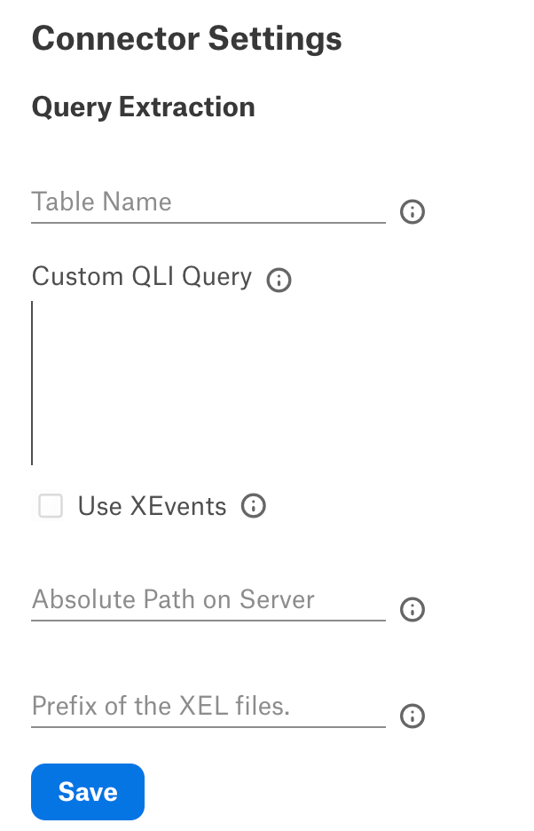
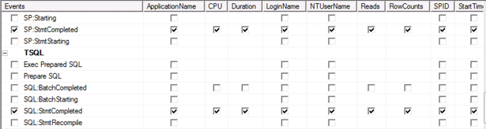
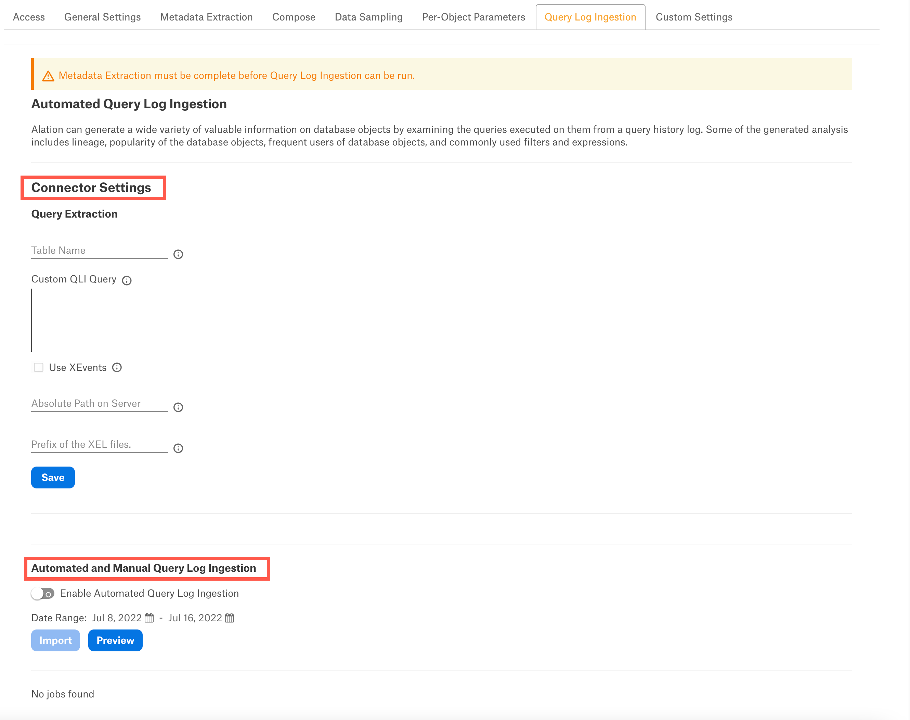

SQL Server Connector: Query Log Ingestion¶
Alation Cloud Service Applies to Alation Cloud Service instances of Alation
Customer Managed Applies to customer-managed instances of Alation
To ingest query logs into the catalog, you can either create a table or view for Alation to retrieve the query logs from or create a custom query to read the logs from SQL Server.
Before running query log ingestion (QLI) in Alation, perform the preliminary QLI setup on SQL Server.
Note
For information on how to configure query log ingestion (QLI) for Azure SQL Managed Instance, see Query Log Ingestion for Azure SQL Managed Instance.
For SQL Server, Alation supports various methods of query ingestion. Select one of the options below.
Option 1: Extended Events¶
Using extended events is the preferred QLI method that has less performance impact on the SQL Server system than other methods. An extended events session is created that logs queries to files. Alation reads those files through SQL queries sent to SQL Server and ingests them. The volume of events may be high, so the configuration described below limits logging to only a sample of events and tries to filter out as many queries as possible that aren’t useful to Alation. We suggest starting with this setup and adjusting the sampling later, working with the sampled logs.
To use this option, make sure your Alation service account has the required permissions. If the Alation service account is a local SQL Server account, it must have the sysadmin role. If an Active Directory account is used, the sysadmin role is not required.
The SQL Server account (not the Alation service account) must have the read/write access to the directory that stores the logs.
Note
For reference on extended events, see Quickstart: Extended events in SQL Server in SQL Server documentation.
Configuration¶
Grant the Alation service account the
VIEW SERVER STATEpermission. This is needed as Alation will run thesys.fn_xe_file_target_read_filecommand to read the logged .xel files that are created by extended events. TheVIEW SERVER STATEpermissions is required to use the command.USE master; GRANT VIEW SERVER STATE TO <service_account>;
Grant the Alation service account permission to run the stored procedure
xp_dirtree. This is needed as Alation will read the list of logged .xel files that it is going to ingest. This stored procedure lists files in a directory.USE master; GRANT EXECUTE ON xp_dirtree TO <service_account>;
Create and turn on an extended events session that logs queries. To configure, see Appendix A.1a SQL Server Extended Events Session Creation for the SQL code. You will need to change the file path to log files and can optionally change some of the other parameters like the buffer size.
When you first turn on the session, monitor it for a few days to see that it is working and assess the volume of log files. If the volume is small—only a few log files per day—you can edit the extended events SQL code to turn down or remove the sampling. See the comments in the SQL code.
Configure the data source settings in the Alation user interface to point to the files that are being logged. Ensure that you include the trailing slashes at the end of the path or you will get partial success with the no logs to ingest warning.
Note
If you run XEvents for SQL Server, enter the file path in the format
C:\\Users\\Public\\Documents\\.
{kind=link}
Option 2: Server Side Trace¶
Alation can use the server side trace to capture the query history log. By default, the server side trace can log a lot of unwanted queries like system queries, or backup and maintenance queries that can occupy a lot of disk space. To limit disk usage, it is important to limit the traced queries to only the important ones that support your use case. For example:
Model queries from data analysts that can be used for reference and knowledge sharing.
Queries on a subset of DBs to compute object popularity in a DB.
If filtering doesn’t help limit the size of the query history log, a trace script can be run for a short interval anywhere from two to four hours to capture a subset of queries.
Refer to Appendix A.1c SQL Server Trace Script for an example trace script. The script should be run directly on the server.
Option 3: SQL Profiler¶
SQL Server environments with light infrequent loads can use the client side profiling with SQL Profiler to capture the query history log. The following steps show how to to set up query history logging using Profiler.
Launch SQL Server Profiler and create a new Template called AlationQueryLog:
{kind=link}
{kind=link}
Click the Events Selection tab and pick the following events:
Stored Procedures ->
SP:StmtCompletedTSQL ->
SQL:StmtCompleted
{kind=link}
3. For the SP:StmtCompleted and SQL:StmtCompleted events, select the following columns:

ApplicationName
CPU
DatabaseName
Duration
EndTime
LoginName
NTUserName
Reads
RowCounts
SPID
StartTime
TextData
Writes
{kind=link}
4. Set Filters to log only the important queries (for example, exclude routine maintenance queries). This step is optional. Click the Column Filters button on the Events Selection tab:
{kind=link}
For example, to exclude queries from MaintenanceApp, set the ApplicationName Not Like filter to MaintenanceApp%.
Set filters on other columns as you see fit to limit logging to useful queries only.
{kind=link}
6. Save the template.
7. Start a trace using the AlationQueryLog template.
{kind=link}
8. Select Save To Table. Select Set maximum rows and define a limit based on the workload in your environment and the disk space on the server.
{kind=link}
9. Observe the trace and adjust the column filters as needed (after pausing the trace).
{kind=link}
10. Set up a job to periodically copy rows from the trace table into another archive table where you maintain history for three or four days.
11. Grant the SELECT privileges to the Alation database account on the archive table to read query history.
Option 4: SQL Server Audit¶
Query history information can be captured from the SQL Server Audit database.
Note
Auditing only stores the first 4000 characters of the query in a row. So, a truncated query will be shown in the query history after QLI if the query has more than 4000 characters.
Note
For specific details about SQL Server Audit, refer to the SQL Server documentation for the relevant SQL Server version:
Prerequisites¶
To use SQL Server Audit for QLI in Alation:
Create a Server Audit to log query events for Alation QLI.
FILEPATHis the path to the directory to store the audit files:CREATE SERVER AUDIT test_audit TO FILE ( FILEPATH = 'C:\Users\Public\Documents\' );
Create a Database Audit Specification that defines which events to audit for Alation. Audit groups specify the type of queries to be logged:
CREATE DATABASE AUDIT SPECIFICATION test_audit_spec FOR SERVER AUDIT test_audit ADD( DATABASE_OBJECT_CHANGE_GROUP), ADD( SELECT ON DATABASE::db_name BY <role>)) WITH (STATE = ON);
Allow some time for users to query the database before performing QLI in Alation. Alation recommends to have 2 to 3 weeks of query history logs in the database for QLI to render meaningful results. Logs will be stored in the file path you have set up in the .sqlaudit format.
To list the files that currently exist in the file path, you can run the following command:
EXEC xp_dirtree 'C:\Users\Public\Documents', 0, 1;
Create a QLI View for Alation with the data from the audit files:
CREATE VIEW Alation_QLI_View AS ( SELECT server_principal_name as userName, (server_principal_name + '/' + CONVERT(varchar(16), server_principal_sid)) as SessionId, statement as queryString, database_name as defaultDatabases, duration_milliseconds as seconds, event_time as sessionStartTime, event_time as StartTime, 'N' as cancelled FROM fn_get_audit_file('C:\Users\Public\Documents\*',default,default) );
Grant the
SELECTprivileges on the created QLI view to the Alation service account.
Other Methods¶
Alation can also support ingestion from a custom table (not recommended).
Configure QLI in Alation¶
Table-Based QLI¶
Provide the view name created for QLI in Option 4: SQL Server Audit section in the Table Name field.
Custom Query-Based QLI¶
When you cannot create a table or view, you can use a custom QLI query to perform QLI. Provide the expected query structure as shown below and click Save:
SELECT
<userNameColumn> AS userName,
<textColumn> as queryString,
<defaultDatabases> AS defaultDatabases,
<sessionIdColumn> AS sessionId,
<sessionStartTimeColumn> AS sessionStartTime,
<StartTimeColumn> AS startTime,
<QueryCancelledColumn> AS cancelled,
<milliSecondsColumn> AS seconds,
FROM <object_name>
WHERE startTime BETWEEN 'STARTTIME' and 'ENDTIME'
ORDER BY sessionId, startTime;
Note
<object_name> can be a view, table or procedure.
Extended Events Method¶
If Extended Events method is used to ingest query logs in Alation:
Select the Use XEvents checkbox.
In the Absolute Path on Server field, provide the absolute path of the .xel files on the server. If this field is blank, the default path
C:\Users\Public\Documents\will be used.In the Prefix of the XEL Files field, provide the prefix of the .xel files. If this field is blank, the default prefix
alation_query_logwill be used.
Automated and Manual QLI¶
Users can either perform query log ingestion manually on demand or enable automated query log ingestion.
To perform manual query log ingestion, make sure that the Enable Automated Query Log Ingestion toggle is Off. Click the Import button to start query log ingestion.
To perform the automated query log ingestion, set the Enable Automated Query Log Ingestion toggle to On and set a schedule in the corresponding fields of the schedule section, specifying the values for week, day, and time. The next query log ingestion job will run automatically on ths schedule.
Note
Hourly schedule for automated QLI is not supported.
{kind=link}